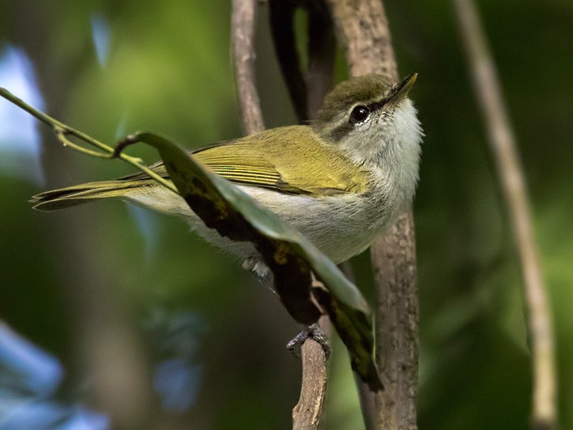

Phylloscopus budongoensis
The Ugunda Woodland Warbler is an Old World warbler in the family Phylloscopidae. It is found in Cameroon, Republic of the Congo, Democratic Republic of the Congo, Equatorial Guinea, Gabon, Kenya, and Uganda. It feeds mainly on insects and other invertebrates, particularly bugs, beetles and spiders.